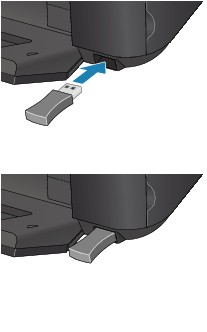
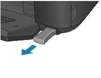

Attaching the Bluetooth Unit to the Printer
Attaching the Bluetooth Unit to the Printer
 Removing the Bluetooth Unit from the Printer
Removing the Bluetooth Unit from the Printer
Attaching the Bluetooth Unit to the Printer
Attach the Bluetooth unit to the Direct Print Port (A) of the printer in accordance with the following procedure.
The external appearance may differ depending on the printer you are using.
-
Make sure that the printer is turned on.
Make sure that any lamp on the Operation Panel is lit.
-
Insert the Bluetooth unit to the Direct Print Port of the printer.
Detach the cap from the Bluetooth unit. Store the cap in a safe location.
 Note
Note-
When the Bluetooth unit is properly attached to the printer, the message is displayed on the LCD.
-
Removing the Bluetooth Unit from the Printer
Remove the Bluetooth unit from the Direct Print Port of the printer in accordance with the following procedure.
-
Remove the Bluetooth unit from the Direct Print Port of the printer.
Important-
Make sure that the lamp on the Bluetooth unit is neither lit nor flashing before you remove the Bluetooth unit.
Important-
Store the Bluetooth unit with the cap attached.
-